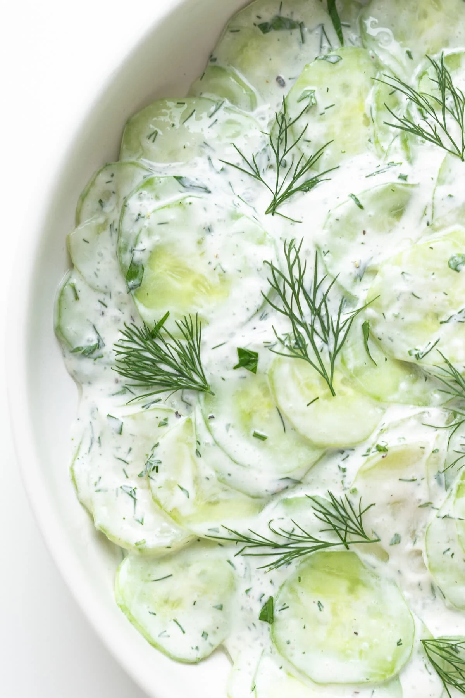

Cucumber Salad

Description
There's a million different ways to prepare a cucumber salad. This preparation
is based on a German recipe. It's creamy, dreamy, and super addicting!
It's filled with a butt load of dill and is extremely refreshing and light. So grab
some cucumbers and let's get into it!
Ingredients
- 2 Large Cucumbers (I prefer English, but any cucumber will do)
- Sour Cream
- White or Apple Cider Vinegar
- Fresh or Dried Dill
- Salt
Steps
- Wash and peel 2 cucumbers.
- Grate both cucumbers into a large bowl, and stir
in 2 tablespoons of salt. Let this sit for at least 5 minutes. The salt will draw the
water out of the cucumbers.
- Drain the salty water from the cucumbers
- Add in two heaping (and I mean heaping) spoonfuls of sour cream.
- Add in 3 tablespoons of vinegar and one tablespoon of sugar.
- Add as much dill
as your heart desires. I usually add quite a bit. Keep in mind that if you are using fresh dill,
the flavor is a lot stronger than dried dill.
- Mix everything well and then add salt to
taste.
- Let your cucumber salad chill in the fridge for at least 30 minutes to let all
the flavors to combine.
- Enjoy!